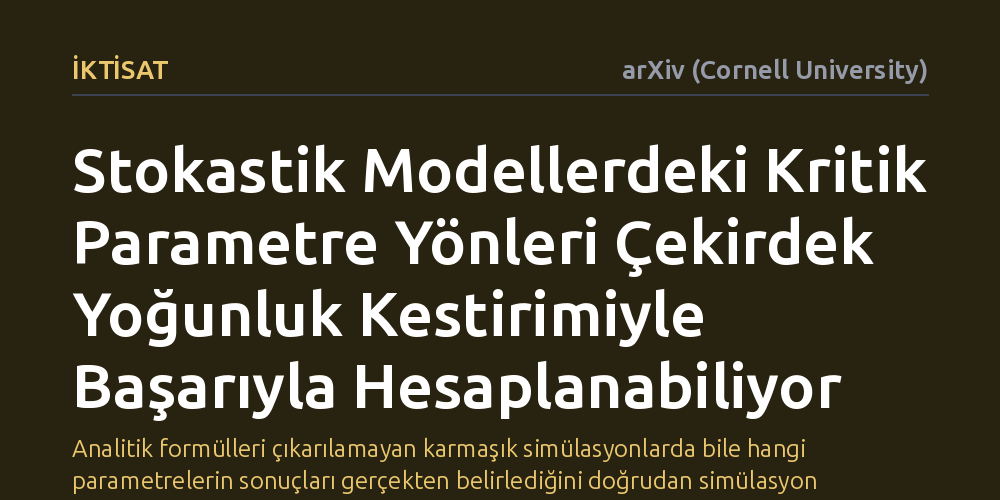

IKTISAT · arXiv (Cornell University) · 2026-09-12
Analitik dağılımı bilinmeyen simülasyon modellerinde kritik parametre yönlerinin çekirdek yoğunluk kestirimiyle (KDE) bulunup bulunamayacağı incelendi. Kirman karınca modelinde yapılan testte, yöntemin pratik simülasyon bütçeleriyle Fisher Bilgi Matrisi özdeğer ve özvektörlerine başarıyla yakınsadığı gösterildi.
Analitik formülleri çıkarılamayan karmaşık simülasyonlarda bile hangi parametrelerin sonuçları gerçekten belirlediğini doğrudan simülasyon verisinden tespit etmeyi mümkün kılıyor.

Sosyal dinamikleri, finansal piyasaları veya karmaşık sistemleri taklit eden bilgisayar simülasyonlarında çok sayıda serbest parametre bulunur. Fakat bu modellerin çoğunda parametrelerin büyük kısmı nihai çıktıyı neredeyse hiç etkilemezken, yalnızca az sayıdaki parametre bileşimi sistemin davranışını belirler. Literatürde 'gevşek modeller' olarak adlandırılan bu yapılarda, hangi parametre yönlerinin katı (kritik), hangilerinin ise gevşek (önemsiz) olduğunu anlamak büyük önem taşır.
Bilgi geometrisi yaklaşımı, bu kritik yönleri belirlemek için Fisher Bilgi Matrisi'ni temel almayı önerir. Ancak bugüne kadarki uygulamalar, modelin olasılık dağılımının matematiksel olarak tam bilinmesine ya da önceden belirlenmiş parametrik kalıplara dayanıyordu. Gerçek dünyada kullanılan etmen temelli veya karmaşık stokastik modellerde ise analitik dağılım formülleri mevcut değildir; araştırmacıların elinde yalnızca simülasyonlardan elde edilen ham çıktılar bulunur.
Çalışma, bu pratik engeli aşmak amacıyla olasılık dağılımını doğrudan simülasyon verilerinden tahmin eden standart çekirdek yoğunluk kestirimi (KDE) yöntemini devreye sokuyor. Temel amaç, makul ve erişilebilir simülasyon bütçeleriyle elde edilen verinin, sistemin gerçek bilgi geometrisini doğru yansıtıp yansıtamayacağını test etmektir.
Araştırmacı bu yöntemi sınamak için iktisat ve karmaşık sistemler literatüründe sürü davranışını açıklamakta sıkça başvurulan Kirman'ın karınca sürüsü modelini ele aldı. Yazar öncelikle bu modelin analitik Hessian matrisini kapalı formda türeterek elinde kesin bir matematiksel referans oluşturdu. Ardından simülasyon verisi arttıkça KDE tabanlı kestirimlerin bu analitik özdeğer ve özvektör değerlerine nasıl yakınsadığını sayısal olarak analiz etti.
Elde edilen sonuçlar, standart çekirdek yoğunluk kestiriminin pratik olarak erişilebilir simülasyon bütçeleri dahilinde analitik Fisher Bilgi Matrisi özdeğer ve özvektörlerine yakınsadığını kanıtladı. Simülasyon veri hacmi makul seviyelere ulaştığında kestirim hatası hızla azalıyor ve modelin sonucuna hükmeden kritik parametre eksenleri netleşiyor.
Bunun yanı sıra çalışmada, tespit edilen bu katı yönün modelin faz keşfinde nasıl avantaj sağladığı da gösterildi. Kirman modelinde etmenlerin kaynaklara dengeli dağıldığı tek tepeli rejim ile bir kaynağa yığıldığı çift tepeli rejim arasındaki geçiş dinamikleri, bu kritik parametre doğrultusu boyunca hareket edilerek çok daha etkin biçimde haritalanabiliyor.
Bu bulgular, özellikle etmen temelli modeller ve stokastik simülasyonlar üzerinde çalışan araştırmacılara güçlü bir analiz aracı sağlıyor. Karmaşık ve analitik denklemi çözülemeyen modellerde dahi hangi parametre kombinasyonlarına odaklanılması gerektiği doğrudan simülasyon çıktıları üzerinden hesaplanabilir hale geliyor.
Böylelikle araştırmacılar yüzlerce simülasyon denemesi arasında kaybolmadan, sistemin davranışını gerçekten dönüştüren hassas dinamikleri belirleyebilir ve model kalibrasyonunu çok daha düşük hesaplama maliyetiyle gerçekleştirebilir.